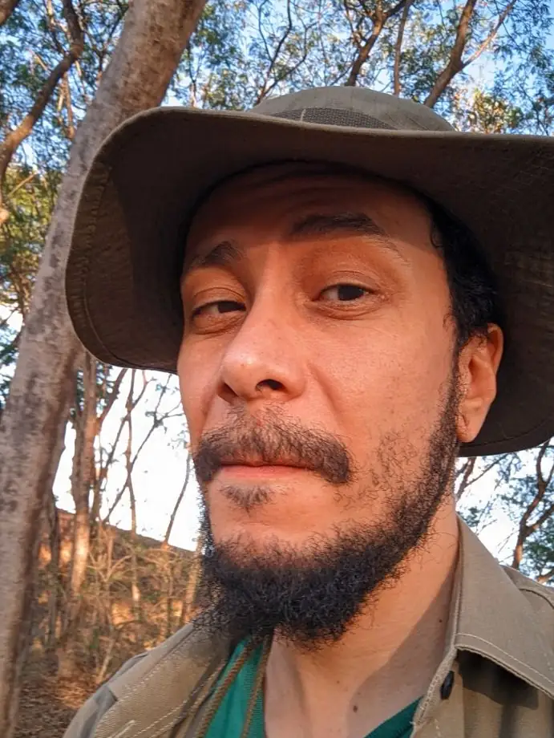

A próxima interface talvez dure apenas um segundo.
E se a melhor interface fosse aquela que desaparece quando não precisamos dela?
Uma fábrica de perguntas difíceis, ideias improváveis e invenções que ainda não sabem onde se encaixar.
Não acreditamos que tudo precisa continuar igual só porque sempre foi assim. Preferimos perguntar, fuçar, desmontar e testar outras possibilidades.
Desenvolvemos software, hardware, firmware, sistemas embarcados e outras invenções que não cabem muito bem numa categoria. Misturamos código, circuitos, design e fabricação digital.
Algumas criações resolvem problemas. Outras simplesmente merecem existir. E, às vezes, uma boa pergunta vale mais do que uma resposta pronta.
Não são profecias. São perguntas que aparecem quando colocamos áreas diferentes para conversar.
E se a melhor interface fosse aquela que desaparece quando não precisamos dela?
Por trás de cada visita existem pessoas, serviços, fornecedores e conexões que ninguém vê.
E se a primeira descoberta sobre alguém fosse uma história em vez do número de seguidores?
Reconhecer limites, mostrar fontes e devolver decisões às pessoas também é inteligência.
Um gesto pode virar circuito, peça impressa, dispositivo ou uma experiência fora da tela.
Personalizar pode significar reconstruir uma ferramenta — não apenas mudar sua cor.
Dos gestos de uma interface à operação de um shopping. Cada frente acompanha uma pergunta, seu estágio real e o próximo experimento.
Apps, extensões, ferramentas e conceitos que atravessam a tela. Conheça o que estamos construindo e o que ainda estamos questionando.
Investigamos a experiência do visitante, a operação dos empreendimentos e novas relações comerciais. Primeiro entendemos o que existe. Depois questionamos o que poderia existir.
shoppings com dossiês documentais na amostra de pesquisa
Etapa 1 documental em revisão, registrada no PR #8. Não são visitas presenciais nem testes de UX. Etapa 2 visual suspensa.
Direção humana e imaginação assistida por IA. Sem fingir que máquinas são pessoas — e sem subestimar o que podemos criar juntos.

HUMANO / 001Conecta pesquisas, cultura e tecnologia. Decide quais perguntas perseguir e o que merece sair do papel.
Pesquisa, síntese e exploração conceitual. Uma colaboração intelectual com direção humana — não uma sociedade jurídica.
Agentes fictícios ilustrados representam áreas de investigação e funções planejadas. Cada ficha identifica seu papel de IA; não significa que todos estejam operando autonomamente.
A gente continua procurando.
Ou melhor: agente continua.